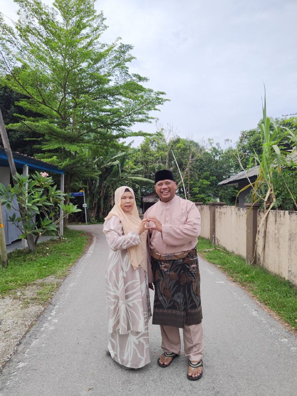
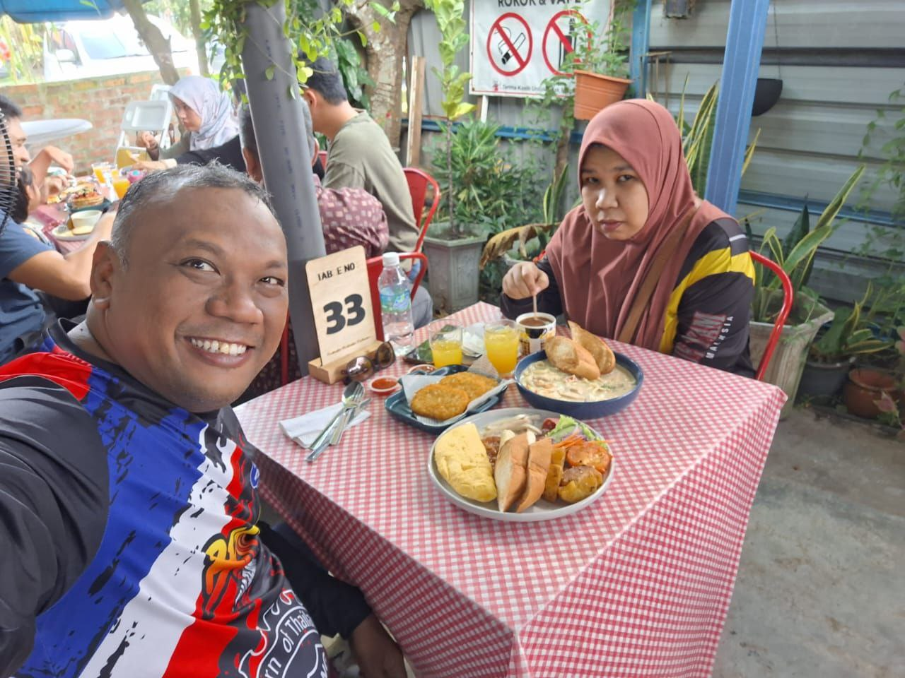
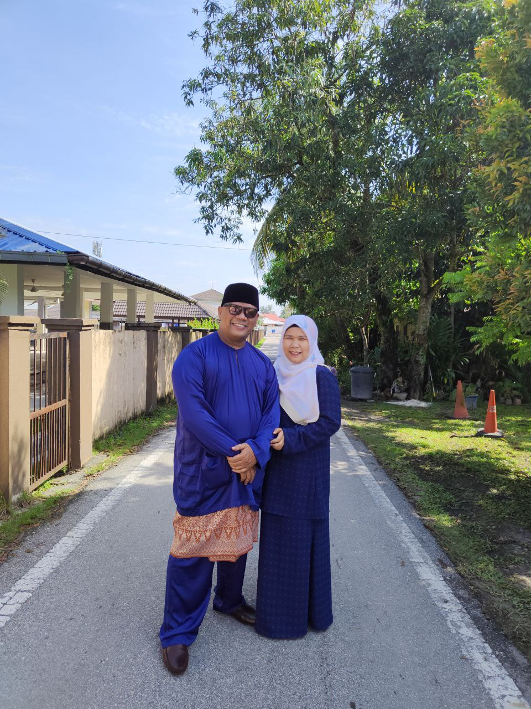
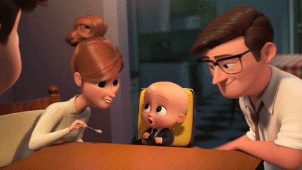
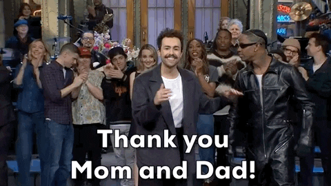
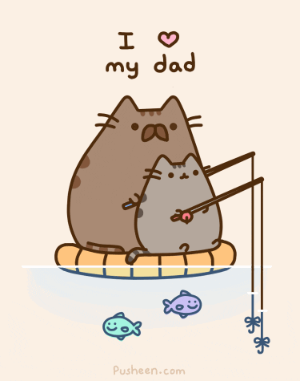
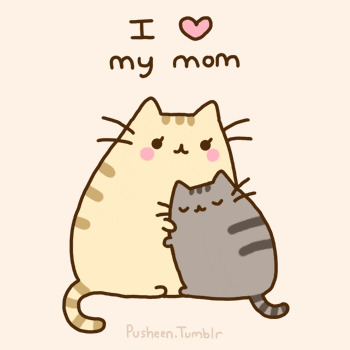

MY PARENTS
MY FATHER BIODATA
- Adie Putra Bin Latip
- 8 August 1975
- Islam
- Male
- Married
- Born in Melaka and currently residing in Kuala Lumpur
- Work at Dewan Bandaraya Kuala Lumpur (DBKL)
- The only superhero I know is my dad. My dad is the one guy I truly trust since he has always looked out for his kids. For instance, my dad always asks me to snap pictures and makes sure I keep him informed when I hang out with my friends.Due to his size, my friends are always afraid of my dad right away. Knowing that soon, my friends will tell me that my dad is the greatest father ever since he is so charming, happy-go-lucky, and adept at interacting with my pals. Last but not least, my dad is the only family member who can lift large objects. For example, fixing the car or managing the barbecue fire.
MY MOTHER BIODATA
- Zariaton Azian Binti Abdul Karim
- 6 December 1977
- Islam
- Female
- Married
- Born in Johor and currently residing in Kuala Lumpur
- Work at Dewan Bandaraya Kuala Lumpur (DBKL)
- My mother is the loveliest; whenever his kids are upset or depressed, she will always lift their spirits.My mother actually retains and remembers our personal information. In addition to being laid back, my mother also lets her kids enjoy themselves. For example, she has never prevented my siblings and I from going to the movies, the mall, or a fun fair on our own. This is because my mother wants us to be self-sufficient and not constantly rely on her.Last but not least, I will always prefer the food that my mother makes. My brothers and I are really different from each other, but my mom's cuisine is just amazing, and she knows her kids better. We are all different in that we enjoy spicy food, sweet food, and more. We are really choosy, so feeding us is difficult.
My parents got married on 21 February 2004, and they've been together for 20 years. My parents are now parents to four children.I adore my parents because they have supported my siblings and me no matter what.
This is the time when they are acting really sweetly towards one another.
This year, during our Eid al-Fitr celebrations, we took this photo. I took this picture on the first day od Eid al-Fitr in my hometown of Sungai Buloh. Taking pictures of my parents together is extremely difficult, especially with my mother. My mother would sometimes only like taking photos when she was in a good mood. Fortunately, my mum was delighted to snap a photo of my dad at that very moment. In contrast to my mom, my dad is very ifferent. My dad enjoys shooting pictures and posting them a social media with his family.

They are enjoying breakfast together at the restaurant at this time. My parents share a office, so on occasion they will head to work together and get breakfast before leaving for work. Every time they take a photo, my parents let thier kids know where they are having breakfast.

I believe I took this photo in my hometown of Sungai Buloh on Eid al-Fitr in 2022.



